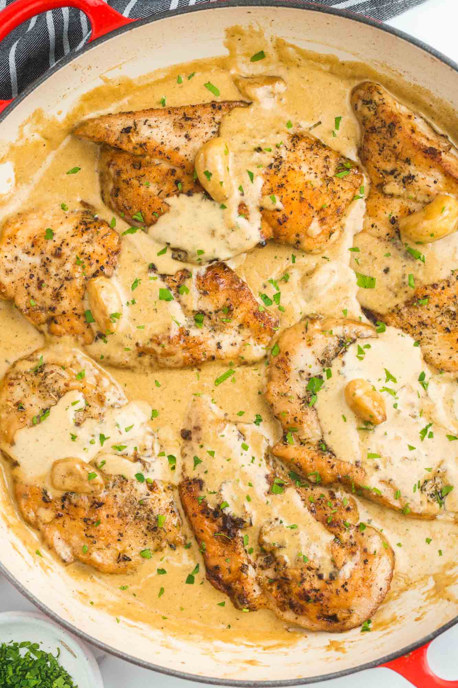

TOP STORIES

FEATURED RECIPECreamy Garlic Butter Chicken
Ayam empuk dengan saus bawang putih dan mentega yang creamy. Klik untuk melihat resep lengkap.
Terbaru di Komunitas

Authentic Chicken Curry
Resep baru • 2 jam lalu
Review: Warung Sambal Bu Rudi
Review Restoran • 5 jam lalu
Festival Kuliner Nusantara 2026
Event • 1 hari lagi